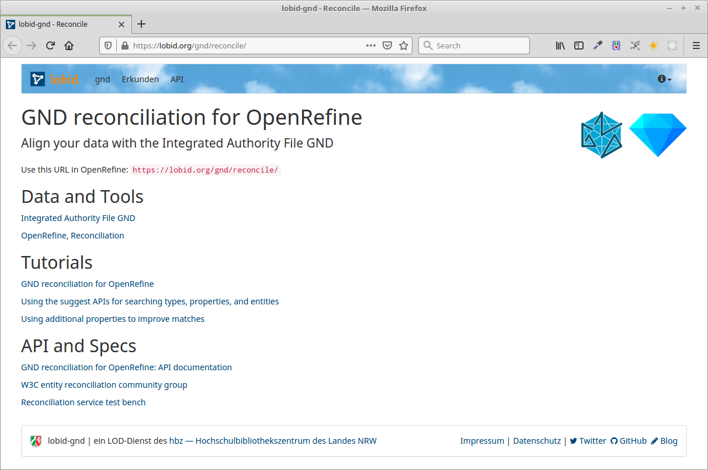

Wie verlinken wir unsere Daten mit der GND?
OpenRefine Reconciliation mit lobid-gnd
Fabian Steeg,
Offene Infrastruktur, hbz NRW

GNDCon, 2021-06-10
Diese Präsentation:
http://slides.lobid.org/2021-gndcon-reconcile/

Überblick
| Datenquellen und Oberfläche von lobid-gnd |
| Grundlagen der Reconciliation in OpenRefine |
| Datenanreicherung auf Basis der Matches |
| Möglickeiten zur Verbesserung des Matching |
lobid steht für Linking Open Bibliographic Data
Seit fast zehn Jahren die zentrale Komponente der offenen Infrastruktur im hbz
Stellt web-basierte Rechercheoberflächen und Schnittstellen bereit
lobid-gnd

/reconcile
Abgleich und Anreicherung lokaler Daten mit der GND

Datenquellen
Die GND wird erstellt und gepflegt durch die GND-Kooperative (Verbünde, angeschlossene Bibliotheken, DNB)
Die DNB publiziert die GND u.a. als Linked Open Data
Zusätzliche Anreicherungen, z.B. Links, in EntityFacts
Diese Daten bilden die Grundlage für lobid-gnd
Daten erkunden
Rechercheoberfläche ermöglicht ein manuelles Erkunden der Daten vor einem automatischen Abgleich
Zum Ausprobieren verlinken die folgenden Screenshots auf die entsprechenden Seiten in lobid-gnd
Oberfläche

Auto Suggest

Ergebnisliste

Einzeltreffer

Beziehungsgraph

OpenRefine Reconciliation
| Grundlagen der Reconciliation in OpenRefine |
| Datenanreicherung auf Basis der Matches |
| Möglickeiten zur Verbesserung des Matching |
Was ist OpenRefine?
"A powerful tool for working with messy data"
"cleaning it; transforming it from one format into another; and extending it with web services and external data"
Oberfläche wie Tabellenkalkulation
Läuft im Browser, lokal oder gehostet
Wo ist OpenRefine?
Lokal, downloaden und installieren:
https://openrefine.org/download.html
Gehostet, z.B. zum Ausprobieren:
http://openrefine.labs.lobid.org
Reconciliation
Abgleichen / Matchen eigener Daten (z.B. Namen von Personen) auf GND-Einträge
Anreicherung durch Übernahme von spezifischen Feldern der gematchten GND-Einträge
Projekt anlegen


Abgleich / Reconciliation


Übung
openrefine.labs.lobid.org | localhost:3333
name;beruf;ort
J. Weizenbaum;Informatiker;Berlin
Twain, Mark;Schriftsteller;
Kumar, Lalit;;
Jemand;;
https://lobid.org/gnd/reconcile
(Daten und URL per CTRL+C in die Zwischenablage kopieren)
Anreicherung
Unsere Namen wurden mit GND-IDs assoziiert
Felder der GND-Entitäten stehen so zur Verfügung
Mit diesen können wir unsere lokalen Daten anreichern
d.h. konkret: neue Spalten in unserer Tabelle anlegen


GND-Entitäten
Angereicherte Felder sind z.T. GND-Entitäten
Sind automatisch abgeglichen / reconciled
Können als Grundlage für weitere Anreicherung dienen

Übung
id,name
1,Haddaway
2,Johannes Geßner
3,Judith Kuckart
4,Rosa Luxemburg
5,Albert Einstein
6,Hazel Brugger
7,Anne Cuneo
8,Vitus Huonder
Reconcile, Berufe und Wirkungsorte ergänzen
Ergebnisse verbessern
Einschränkung der Typen der Zielentitäten
Verwendung zusätzlicher lokaler Daten
Gezielte Suche nach Treffern
Einschränkung der Entitätstypen

Verwendung zusätzlicher lokaler Daten


Gezielte Suche nach Treffern

Übung
Verwendung zusätzlicher lokaler Daten
1. Beispiel: Lebensdaten
2. Beispiel: Beruf & Parteizugehörigkeit
Weitere Informationen
API-Dokumentation, Tutorials, W3C-Gruppe, etc: